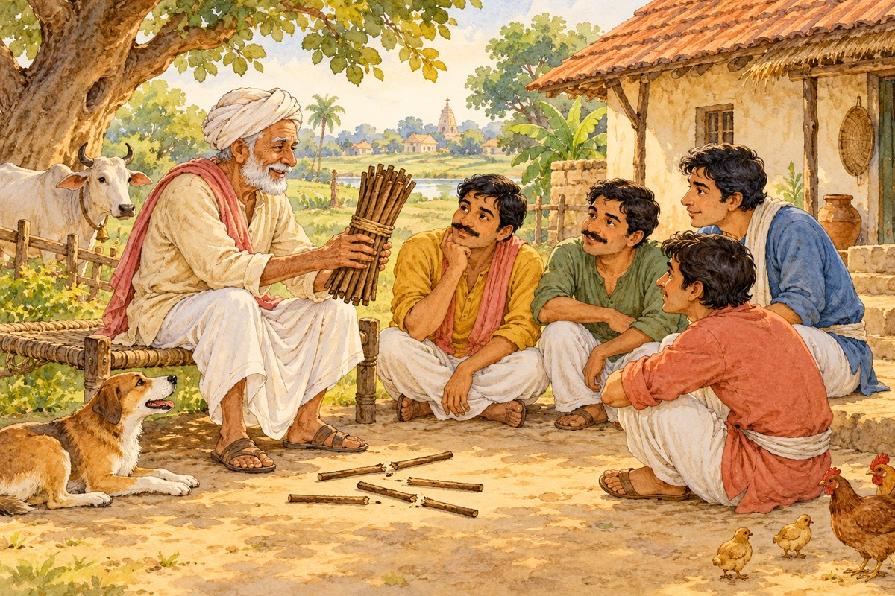

एक बूढ़ा किसान था।
Ek boodha kisaan tha.
There was an old farmer.
Beginner Hindi · Story 4 of 20
Ekta mein shakti
Strength in Unity
Listen one word at a time. Read the pronunciation below each Hindi sentence, then check its English meaning.

Select ▶ beside a sentence to listen.
एक बूढ़ा किसान था।
Ek boodha kisaan tha.
There was an old farmer.
उसके चार बेटे थे।
Uske chaar bete the.
He had four sons.
वे हमेशा लड़ते थे।
Ve hamesha ladte the.
They always fought.
किसान ने सबको एक-एक लकड़ी दी।
Kisaan ne sabko ek-ek lakdi dee.
The farmer gave everyone one stick each.
सबने लकड़ी आसानी से तोड़ दी।
Sabne lakdi aasaani se tod dee.
Everyone broke the stick easily.
फिर उसने लकड़ियों का एक गट्ठर दिया।
Phir usne lakdiyon ka ek gatthar diya.
Then he gave a bundle of sticks.
कोई भी उसे नहीं तोड़ सका।
Koi bhi use nahi tod saka.
No one could break it.
किसान ने कहा, "अगर तुम साथ रहोगे, तो कोई तुम्हें नुकसान नहीं पहुँचा सकता।"
Kisaan ne kaha, "Agar tum saath rahoge, toh koi tumhein nuksaan nahi pahuncha sakta".
The farmer said, "If you stay together, no one can harm you."
सीख: एकता में शक्ति है।
Seekh: Ekta mein shakti hai.
Moral: Unity is strength.
Words appear in story order. Meanings describe their use here; changed forms are included to help you read.
| Word | Pronunciation | Meaning | Context | Context meaning |
|---|---|---|---|---|
| ek | a; one | एक बूढ़ा किसान था। Ek boodha kisaan tha. | There was an old farmer. | |
| boodha | old (masculine) | एक बूढ़ा किसान था। Ek boodha kisaan tha. | There was an old farmer. | |
| kisaan | farmer | एक बूढ़ा किसान था। Ek boodha kisaan tha. | There was an old farmer. | |
| tha | was (masculine) | एक बूढ़ा किसान था। Ek boodha kisaan tha. | There was an old farmer. | |
| uske | his; her; of that | उसके चार बेटे थे। Uske chaar bete the. | He had four sons. | |
| chaar | four | उसके चार बेटे थे। Uske chaar bete the. | He had four sons. | |
| bete | sons | उसके चार बेटे थे। Uske chaar bete the. | He had four sons. | |
| the | were (masculine) | उसके चार बेटे थे। Uske chaar bete the. | He had four sons. | |
| ve | they | वे हमेशा लड़ते थे। Ve hamesha ladte the. | They always fought. | |
| hamesha | always | वे हमेशा लड़ते थे। Ve hamesha ladte the. | They always fought. | |
| ladte | fight (habitually) | वे हमेशा लड़ते थे। Ve hamesha ladte the. | They always fought. | |
| ne | marks the doer of a completed action | किसान ने सबको एक-एक लकड़ी दी। Kisaan ne sabko ek-ek lakdi dee. | The farmer gave everyone one stick each. | |
| sabko | to everyone | किसान ने सबको एक-एक लकड़ी दी। Kisaan ne sabko ek-ek lakdi dee. | The farmer gave everyone one stick each. | |
| ek-ek | one each | किसान ने सबको एक-एक लकड़ी दी। Kisaan ne sabko ek-ek lakdi dee. | The farmer gave everyone one stick each. | |
| lakdi | wood; stick | किसान ने सबको एक-एक लकड़ी दी। Kisaan ne sabko ek-ek lakdi dee. | The farmer gave everyone one stick each. | |
| di | gave (feminine) | किसान ने सबको एक-एक लकड़ी दी। Kisaan ne sabko ek-ek lakdi dee. | The farmer gave everyone one stick each. | |
| sabne | everyone (as doer) | सबने लकड़ी आसानी से तोड़ दी। Sabne lakdi aasaani se tod dee. | Everyone broke the stick easily. | |
| aasaani | ease | सबने लकड़ी आसानी से तोड़ दी। Sabne lakdi aasaani se tod dee. | Everyone broke the stick easily. | |
| se | from; with; by; than | सबने लकड़ी आसानी से तोड़ दी। Sabne lakdi aasaani se tod dee. | Everyone broke the stick easily. | |
| tod | break | सबने लकड़ी आसानी से तोड़ दी। Sabne lakdi aasaani se tod dee. | Everyone broke the stick easily. | |
| phir | then; again | फिर उसने लकड़ियों का एक गट्ठर दिया। Phir usne lakdiyon ka ek gatthar diya. | Then he gave a bundle of sticks. | |
| usne | he or she (doer of a completed action) | फिर उसने लकड़ियों का एक गट्ठर दिया। Phir usne lakdiyon ka ek gatthar diya. | Then he gave a bundle of sticks. | |
| lakdiyon | sticks (changed plural form) | फिर उसने लकड़ियों का एक गट्ठर दिया। Phir usne lakdiyon ka ek gatthar diya. | Then he gave a bundle of sticks. | |
| ka | of (masculine) | फिर उसने लकड़ियों का एक गट्ठर दिया। Phir usne lakdiyon ka ek gatthar diya. | Then he gave a bundle of sticks. | |
| gatthar | bundle | फिर उसने लकड़ियों का एक गट्ठर दिया। Phir usne lakdiyon ka ek gatthar diya. | Then he gave a bundle of sticks. | |
| diya | gave; marks a completed action | फिर उसने लकड़ियों का एक गट्ठर दिया। Phir usne lakdiyon ka ek gatthar diya. | Then he gave a bundle of sticks. | |
| koi | someone; anyone | कोई भी उसे नहीं तोड़ सका। Koi bhi use nahi tod saka. | No one could break it. | |
| bhi | also; even | कोई भी उसे नहीं तोड़ सका। Koi bhi use nahi tod saka. | No one could break it. | |
| use | him; her; to him or her | कोई भी उसे नहीं तोड़ सका। Koi bhi use nahi tod saka. | No one could break it. | |
| naheen | not; no | कोई भी उसे नहीं तोड़ सका। Koi bhi use nahi tod saka. | No one could break it. | |
| saka | was able to (masculine) | कोई भी उसे नहीं तोड़ सका। Koi bhi use nahi tod saka. | No one could break it. | |
| kaha | said | किसान ने कहा, "अगर तुम साथ रहोगे, तो कोई तुम्हें नुकसान नहीं पहुँचा सकता।" Kisaan ne kaha, "Agar tum saath rahoge, toh koi tumhein nuksaan nahi pahuncha sakta". | The farmer said, "If you stay together, no one can harm you." | |
| agar | if | किसान ने कहा, "अगर तुम साथ रहोगे, तो कोई तुम्हें नुकसान नहीं पहुँचा सकता।" Kisaan ne kaha, "Agar tum saath rahoge, toh koi tumhein nuksaan nahi pahuncha sakta". | The farmer said, "If you stay together, no one can harm you." | |
| tum | you | किसान ने कहा, "अगर तुम साथ रहोगे, तो कोई तुम्हें नुकसान नहीं पहुँचा सकता।" Kisaan ne kaha, "Agar tum saath rahoge, toh koi tumhein nuksaan nahi pahuncha sakta". | The farmer said, "If you stay together, no one can harm you." | |
| saath | together; with | किसान ने कहा, "अगर तुम साथ रहोगे, तो कोई तुम्हें नुकसान नहीं पहुँचा सकता।" Kisaan ne kaha, "Agar tum saath rahoge, toh koi tumhein nuksaan nahi pahuncha sakta". | The farmer said, "If you stay together, no one can harm you." | |
| rahoge | you will stay | किसान ने कहा, "अगर तुम साथ रहोगे, तो कोई तुम्हें नुकसान नहीं पहुँचा सकता।" Kisaan ne kaha, "Agar tum saath rahoge, toh koi tumhein nuksaan nahi pahuncha sakta". | The farmer said, "If you stay together, no one can harm you." | |
| to | then; emphasis marker | किसान ने कहा, "अगर तुम साथ रहोगे, तो कोई तुम्हें नुकसान नहीं पहुँचा सकता।" Kisaan ne kaha, "Agar tum saath rahoge, toh koi tumhein nuksaan nahi pahuncha sakta". | The farmer said, "If you stay together, no one can harm you." | |
| tumhein | you; to you | किसान ने कहा, "अगर तुम साथ रहोगे, तो कोई तुम्हें नुकसान नहीं पहुँचा सकता।" Kisaan ne kaha, "Agar tum saath rahoge, toh koi tumhein nuksaan nahi pahuncha sakta". | The farmer said, "If you stay together, no one can harm you." | |
| nuksaan | harm; loss | किसान ने कहा, "अगर तुम साथ रहोगे, तो कोई तुम्हें नुकसान नहीं पहुँचा सकता।" Kisaan ne kaha, "Agar tum saath rahoge, toh koi tumhein nuksaan nahi pahuncha sakta". | The farmer said, "If you stay together, no one can harm you." | |
| pahuncha | reached; caused (harm) | किसान ने कहा, "अगर तुम साथ रहोगे, तो कोई तुम्हें नुकसान नहीं पहुँचा सकता।" Kisaan ne kaha, "Agar tum saath rahoge, toh koi tumhein nuksaan nahi pahuncha sakta". | The farmer said, "If you stay together, no one can harm you." | |
| sakta | can; able to (masculine) | किसान ने कहा, "अगर तुम साथ रहोगे, तो कोई तुम्हें नुकसान नहीं पहुँचा सकता।" Kisaan ne kaha, "Agar tum saath rahoge, toh koi tumhein nuksaan nahi pahuncha sakta". | The farmer said, "If you stay together, no one can harm you." | |
| seekh | lesson; moral | सीख: एकता में शक्ति है। Seekh: Ekta mein shakti hai. | Moral: Unity is strength. | |
| ekta | unity | सीख: एकता में शक्ति है। Seekh: Ekta mein shakti hai. | Moral: Unity is strength. | |
| mein | in | सीख: एकता में शक्ति है। Seekh: Ekta mein shakti hai. | Moral: Unity is strength. | |
| shakti | strength; power | सीख: एकता में शक्ति है। Seekh: Ekta mein shakti hai. | Moral: Unity is strength. | |
| hai | is | सीख: एकता में शक्ति है। Seekh: Ekta mein shakti hai. | Moral: Unity is strength. |